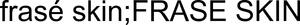

Trade Mark Journal No.2025/038 19 September 2025
WO0000001874134 (3)
Office of origin: Australia
Date of International Registration:31 July 2025
Date of designation in the UK:
31 July 2025

- Class 3
- Facial masks (cosmetic); facial scrubs (cosmetic); beauty masks; beauty care products; skin care oils (cosmetic); facial toners (cosmetic); cosmetic bath products; cosmetic creams; cosmetic creams for wrinkles; cosmetic moisturisers; cosmetic skin care products; cosmetic soaps; cosmetics; facial care products (cosmetic); facial moisturisers (cosmetic); facial packs (cosmetic); moisturisers (cosmetics); moisturising gels (cosmetic); moisturising lotions (cosmetic); moisturising skin lotions (cosmetic); serum (cosmetic preparations); skin care creams (cosmetic); skin care products (cosmetic); skin cleaners (cosmetic); skin cleansing cream (cosmetic); skincare cosmetics; skincare preparations (cosmetic); facial washes (cosmetic); aftershave cologne; aftershave moisturising cream; aftershave moisturising preparations; cologne; sun blocking lotions (cosmetics); moustache wax; beard dyes; beard softeners; tints for the beard; prepared wax for moustaches; hair balm; hair conditioner; hair cream; hair mousse; hair shampoo; hair styling waxes; hair tinters; shaving creams; shaving foams; shaving gels; shaving preparations; shaving soap; shaving sprays; hair dyes; hair products; hair rinses; hair styling lotions; hair styling preparations; after-shave lotions; hair gel; antiperspirant deodorants; body deodorants; body oil; facial oil; non-medicated toiletries; toiletry preparations (non-medicated); after sun products (not medicated); perfumes; fragrances.
Zac London
Beau London